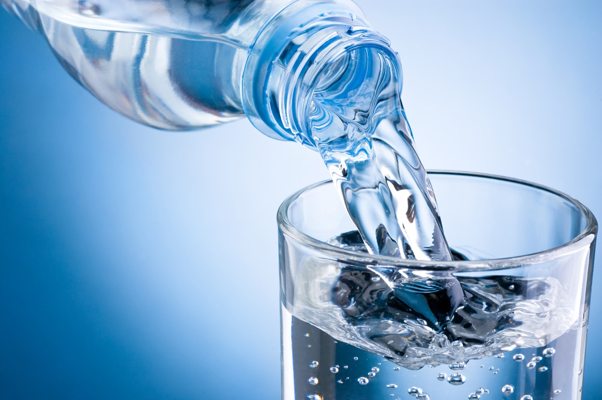

CASO CURIOSO #1: Mitos del Metabolismo y el Agua Helada
Existe la creencia popular de que beber agua helada durante el día o en las mañanas acelera significativamente el metabolismo y ayuda a quemar grasa de manera casi milagrosa. En la atención clínica cotidiana de NutriVida, es una de las dudas más frecuentes entre nuestros pacientes.
La explicación fisiológica detrás de este mito es que el cuerpo gasta energía térmica para calentar el agua helada hasta la temperatura corporal (aproximadamente 37 °C). Si bien este proceso exige un gasto calórico por termogénesis, la cantidad real de calorías utilizadas es extremadamente baja: aproximadamente entre 4 y 7 calorías por vaso de agua fría.
Por ende, aunque técnicamente existe un gasto de energía, su impacto cuantitativo en la pérdida de grasa corporal es insignificante. Mantener una hidratación adecuada es fundamental para la salud celular y el rendimiento físico, pero la pérdida de peso real dependerá de un déficit calórico planificado por un profesional de la salud.
Fuente oficial de referencia: Biblioteca Nacional de Medicina de EE. UU. (NIH / MedlinePlus) – Información sobre el agua en la dieta y funciones metabólicas
Revisado por: Equipo Clínico NutriVida, Temuco.